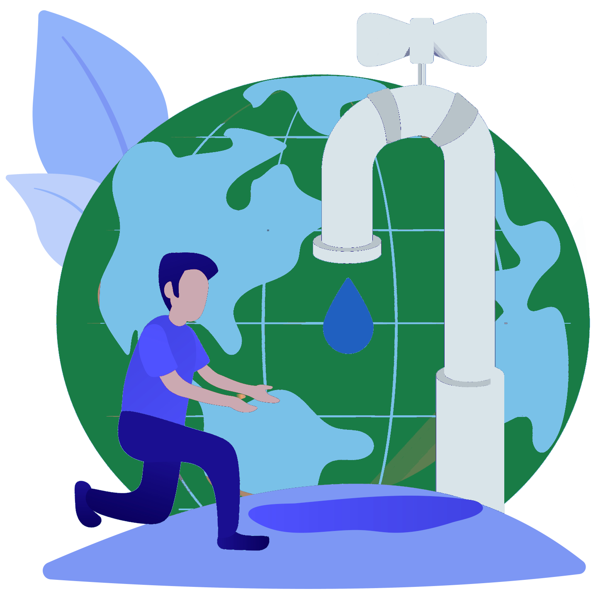

Escasez y gestión insostenible del agua
Respuestas
-
El impacto ambiental más grave es la destrucción de ecosistemas acuáticos (ríos, humedales,
acuíferos) debido a la sobreextracción y la contaminación por vertidos, lo que conduce a la pérdida
de biodiversidad y, en zonas costeras, a la intrusión de agua salina.
- El impacto sobre las personas incluye graves problemas de salud pública por la falta de agua potable
y saneamiento seguro, causando enfermedades. Económicamente, frena el desarrollo al afectar
directamente la producción agrícola (mayor consumidora de agua), aumentar los costos operativos en
la industria y generar conflictos sociales por la competencia del recurso.
- Las medidas para minimizar estos impactos se enfocan en la eficiencia y la sostenibilidad. Se
promueve la reutilización de aguas residuales y la captación de lluvia, se invierte en tecnología de
ahorro (riego por goteo y reparación de fugas), y se busca restaurar los ecosistemas naturales
(humedales y cuencas) para mejorar la recarga natural y la calidad del agua.
- Las principales críticas se dirigen a la inequidad de las políticas de precios (que pueden afectar a
los más pobres) y a los problemas de gobernanza (mala gestión y corrupción), que desvían el recurso
de las comunidades. También se cuestiona el alto costo energético y el impacto ambiental de las
soluciones a gran escala, como la desalinización, si no se gestionan de forma sostenible.
